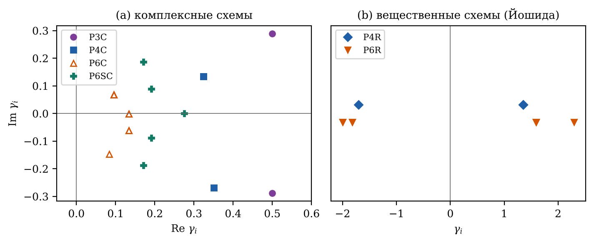
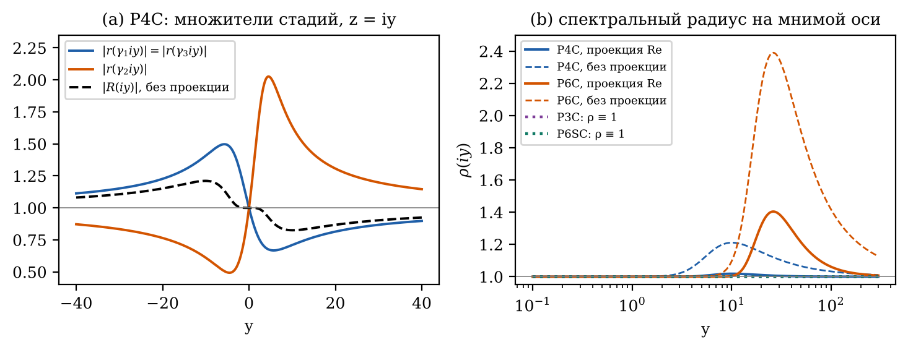
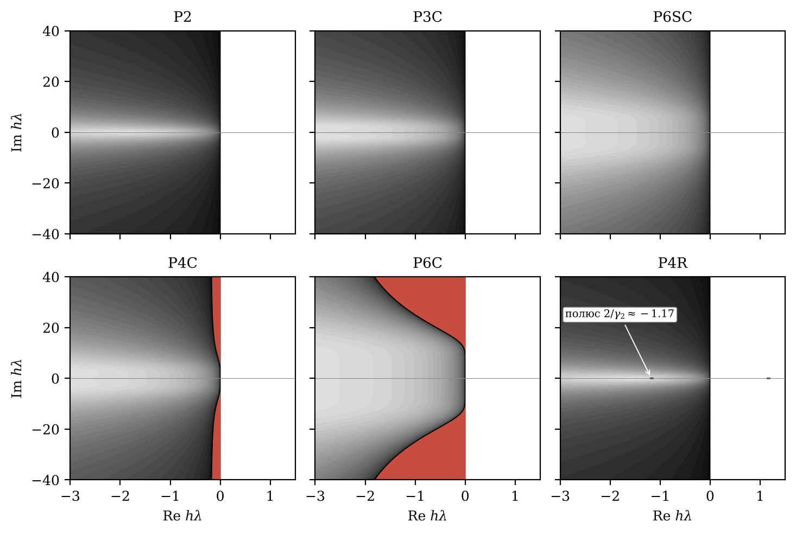
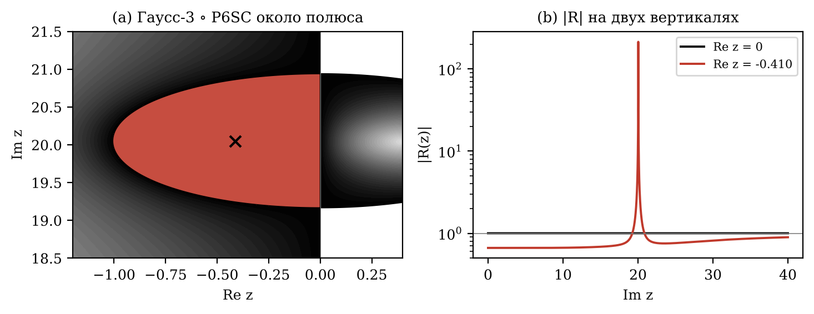
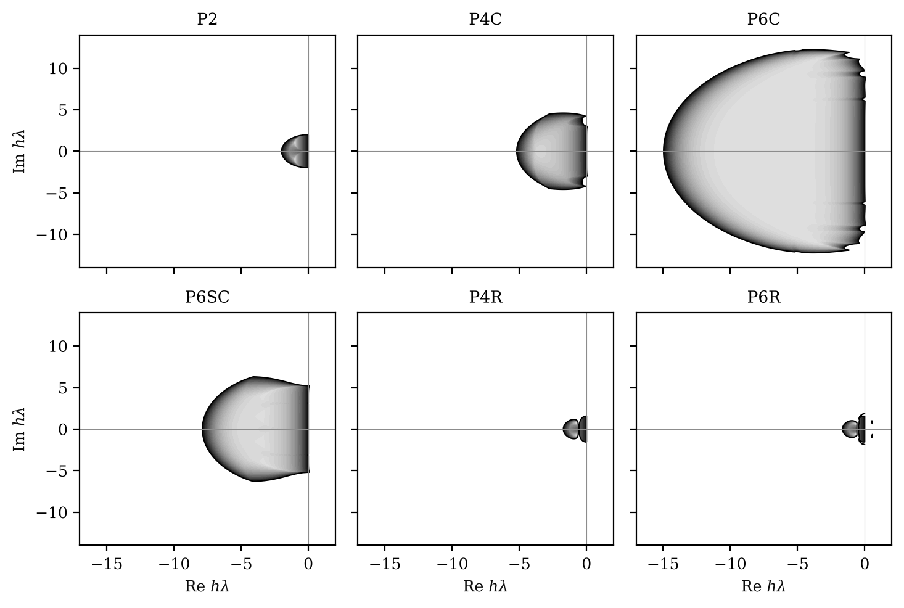
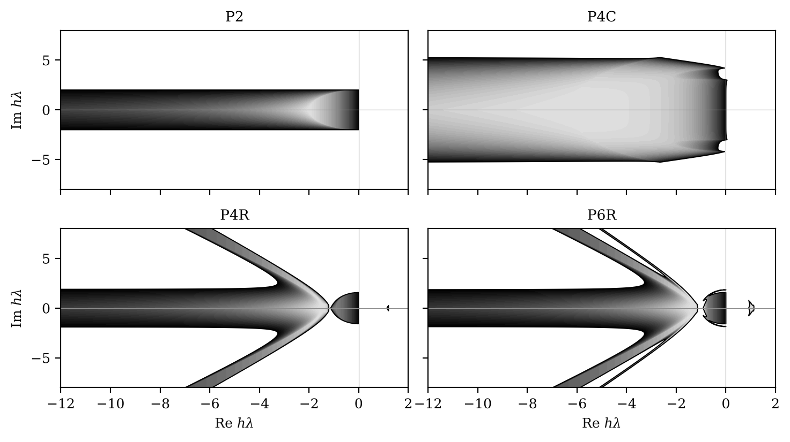
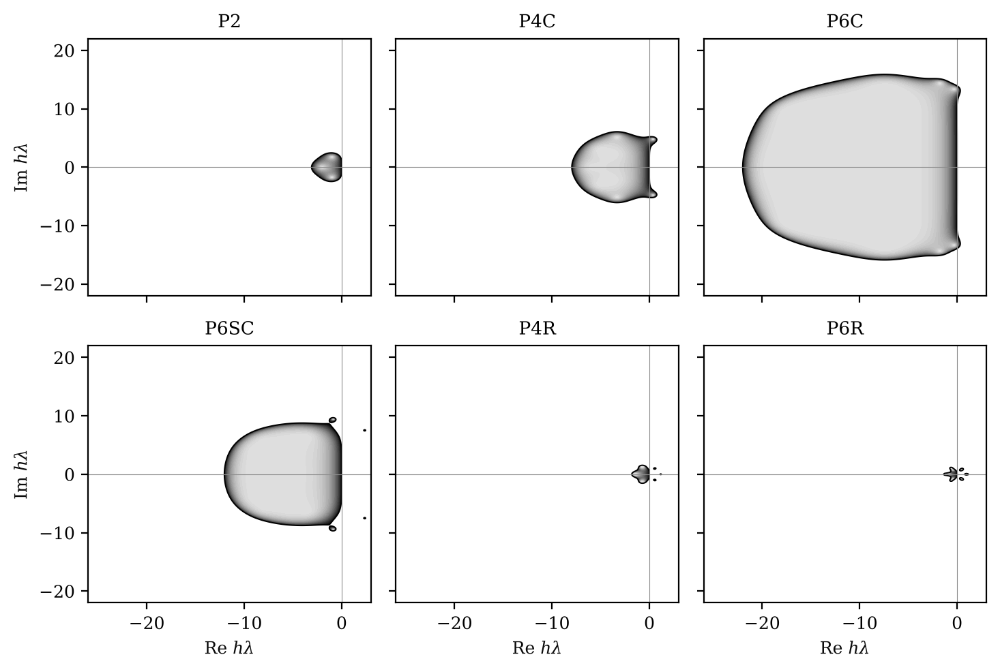
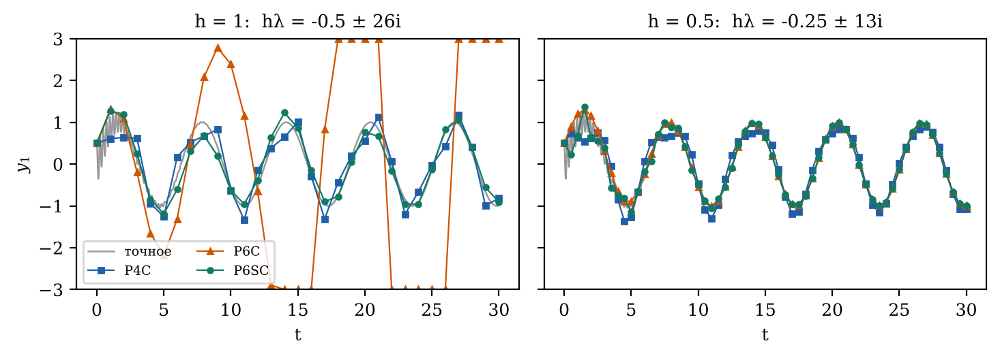

Аннотация. Композиционные методы повышают порядок симметричного опорного метода второго порядка до 4 и 6, но вещественные коэффициенты таких схем обязательно содержат отрицательные шаги. В работе исследуется, сохраняет ли композиция A-устойчивость опорного метода, если шаги стадий комплексные. Рассмотрены три опорных метода: неявный метод трапеций, полунеявный композиционный диагональный метод CD (KD) и модифицированная явная средняя точка Грэгга со сглаживающим шагом. Для анализа используется матричная функция устойчивости на двумерной тестовой системе с параметром асимметрии, предложенная Гальченко и соавт. Показано, что композиция A-устойчивого метода в общем случае не A-устойчива: комплексный тройной прыжок четвёртого и шестого порядков на трапециях имеет спектральный радиус 1,018 и 1,404 на мнимой оси и только A(89,54°)- и A(87,36°)-устойчив, а у вещественных схем Йошиды есть полюс на отрицательной вещественной полуоси, хотя множество неустойчивости в левой полуплоскости у них мало и сосредоточено около полюсов. Доказано достаточное условие: если набор коэффициентов замкнут относительно сопряжения, вещественные части коэффициентов положительны, а полюсы функции устойчивости опоры вещественны, композиция A-устойчива. Пример с методом Гаусса–Лежандра показывает, что условие на полюсы существенно. Для KD и средней точки, которые не A-устойчивы уже как опоры, комплексные схемы расширяют ограниченную область устойчивости в расчёте на макрошаг (но не на одно вычисление стадии), а вещественные схемы с отрицательными шагами её дробят, что согласуется с наблюдавшейся ранее фрагментацией областей вещественных композиций CD.
Ключевые слова: композиционные методы; комплексные коэффициенты; A-устойчивость; область устойчивости; полунеявные методы; метод трапеций; симметрично-сопряжённые схемы
MSC: 65L05; 65L07; 65L20
Композиционный метод строится из одношагового опорного метода $\Phi_h$ последовательным применением его с долями шага $\gamma_i h$ [1,2]. Если опорный метод симметричен и имеет порядок 2, то подбором коэффициентов $\gamma_i$ порядок можно поднять до 4, 6 и выше; классический пример даёт «тройной прыжок» Йошиды и Судзуки [3,4]. Однако при вещественных $\gamma_i$ порядок выше двух недостижим без отрицательных шагов: это следует из результатов Шэна, Судзуки, Голдмана–Капера и Бланеса–Касаса [5–7,17]. Для диссипативных и жёстких задач отрицательный шаг означает интегрирование «назад по времени», где опорный метод неустойчив. Поэтому для параболических задач были предложены композиции и расщепления с комплексными коэффициентами, у которых $\operatorname{Re}\gamma_i>0$ [8–10], а также симметрично-сопряжённые схемы с $\gamma_{m+1-i}=\bar\gamma_i$ [11].
Устойчивость композиций полунеявных методов подробно исследована в работе Гальченко и соавт. [12]. Авторы показали, что скалярная тестовая задача Далквиста к полунеявным методам неприменима, ввели матричную функцию устойчивости на двумерной тестовой системе с коэффициентом асимметрии $k$ и обнаружили, что области устойчивости вещественных композиций метода CD «фрагментированы» и состоят из множества слабо связанных кусков [12]. Ранее для полунеявных композиционных схем строились также области предпочтения [13].
В настоящей работе ставится вопрос: является ли композиция A-устойчивого метода A-устойчивой, если коэффициенты композиции комплексные? Ответ не очевиден. Стадия с комплексным $\gamma$ вычисляет функцию устойчивости опоры в точке $\gamma z$, которая при $z$ на мнимой оси уходит с неё в одну из полуплоскостей. В работе рассматриваются три опорных метода второго порядка: неявный метод трапеций, полунеявный метод CD (в обозначениях проекта KD) [12,14] и модифицированная явная средняя точка Грэгга со сглаживающим шагом [15].
Вклад работы следующий.
Работа организована так. В разделе 2 описаны композиционные схемы, опорные методы и методика расчёта функции устойчивости. В разделе 3 приведены результаты для каждого опорного метода, теорема и численный пример. Раздел 4 содержит обсуждение, раздел 5 — выводы.
Пусть $\Phi_h$ — одношаговый опорный метод для задачи $\dot y=f(t,y)$. Композиционный метод с $m$ стадиями имеет вид
Для симметричного опорного метода второго порядка палиндромная схема ($\gamma_{m+1-i}=\gamma_i$) имеет порядок 4, если $\sum\gamma_i^3=0$ [1]. Схема тройного прыжка [3,4]
повышает порядок с $p$ до $p+2$. Корень $w=1$ даёт вещественные коэффициенты Йошиды со средним шагом $\gamma_2\approx-1{,}7024$ (схема P4R при $p=2$). Корень $w=e^{2\pi i/3}$ даёт комплексные коэффициенты $\gamma_1=\gamma_3\approx0{,}3244+0{,}1346i$, $\gamma_2\approx0{,}3512-0{,}2692i$ (схема P4C). Схемы 6-го порядка P6R и P6C из 9 стадий получаются вложением (2) с $p=4$ в схему 4-го порядка; для P6C взят корень $w=e^{4\pi i/5}$. Кроме того, рассматриваются две симметрично-сопряжённые схемы [11]. Схема P3C имеет две стадии $\gamma_{1,2}=\tfrac12\pm\tfrac{i}{2\sqrt3}$. Схема P6SC имеет пять стадий $\gamma_{6-i}=\bar\gamma_i$:
Для вещественной задачи после каждого шага композиции берётся вещественная часть, $y_{n+1}=\operatorname{Re}\Psi_h(y_n)$ (проекция Re). У симметрично-сопряжённой схемы на симметричной опоре ведущие члены локальной ошибки чисто мнимые [11]. Поэтому комплексное решение (и его мнимая часть) сходится с порядком 3, а вещественная часть — с порядком 4 у P3C и 6 у P6SC, причём это верно и при проекции на каждом шаге, и при взятии Re только в конце; мы проверили это численно. В расчётах устойчивости ниже проекция выполняется после каждого шага, как в решателе. Все схемы сведены в таблицу 1, коэффициенты показаны на рис. 1.
| Схема | Стадий | Порядок | Коэффициенты | $\min\operatorname{Re}\gamma_i$ | Набор замкнут относительно сопряжения |
|---|---|---|---|---|---|
| P2 | 1 | 2 | опорный метод | 1 | да |
| P3C | 2 | 4 | симметрично-сопряжённые | 0,5 | да |
| P4C | 3 | 4 | (2), $w=e^{2\pi i/3}$ | 0,324 | нет |
| P4R | 3 | 4 | (2), $w=1$ | −1,702 | да (вещественные) |
| P6C | 9 | 6 | вложенный (2), комплексный | 0,083 | нет |
| P6R | 9 | 6 | вложенный (2), вещественный | −2,000 | да (вещественные) |
| P6SC | 5 | 6 | (3), симметрично-сопряжённые | 0,171 | да |

Метод трапеций $y_{n+1}=y_n+\tfrac h2\bigl(f(t_n,y_n)+f(t_{n+1},y_{n+1})\bigr)$ симметричен, имеет порядок 2 и функцию устойчивости
с единственным полюсом $w=2$. Неявное уравнение стадии с комплексным шагом решается методом Ньютона в комплексной арифметике.
Полунеявный метод CD (KD) [12,14] для системы $\dot x_1=f_1(x_1,x_2)$, $\dot x_2=f_2(x_1,x_2)$ состоит из полушага полуявного метода Эйлера–Кромера и полушага диагонально-неявного D-метода, выполняемого в обратном порядке компонент:
Это формула (1) работы [12], то есть случай $s=0{,}5$ метода с переменной симметрией [14]. Только при $s=0{,}5$ метод симметричен и имеет порядок 2, поэтому только он пригоден как опора для схем таблицы 1. Каждое неявное уравнение в (5) скалярно; в стадии композиции шаг $h$ заменяется на $\gamma_i h$.
Модифицированная средняя точка Грэгга со сглаживанием [15] с двумя подшагами $h_s=h/2$:
Это явный метод второго порядка с функцией устойчивости $r(w)=1+w+\tfrac{w^2}{2}+\tfrac{w^3}{8}$ (совпадение с численной реализацией проверено до $10^{-15}$). Метод (6) симметричен лишь приближённо: $r(w)r(-w)=1-w^6/64$, и дефект симметрии на нелинейных задачах также имеет порядок $h^6$. Поэтому схемы 4-го порядка дают на нём порядок 4, а схемы 6-го порядка только 5. Для анализа устойчивости ниже симметрия не требуется.
Следуя [12], рассмотрим тестовую систему $\dot X=AX$ с вещественной матрицей $A=\begin{pmatrix}a&b\\c&d\end{pmatrix}$, собственными числами $\lambda_{1,2}=\sigma\pm i\omega$ и коэффициентом асимметрии $k=a/d$:
При $k=1$ матрица подобна нормальной жордановой форме $\begin{pmatrix}\sigma&\omega\\-\omega&\sigma\end{pmatrix}$, при $k=0$ имеет форму Фробениуса. Как и в [12], выбор разбиения $bc$ на $b$ и $c$ на результат не влияет; в расчётах $b=1$. Положим $h=1$, так что точка $z=\sigma+i\omega$ — это $h\lambda$.
Матрица перехода $R_i$ одной стадии получается применением опорного метода с шагом $\gamma_i h$ к начальной матрице $R_0=I$, как в формулах (21)–(25) работы [12]. Для метода CD неявность в D-полушаге разрешается делением на $1-\gamma_i h d$ и $1-\gamma_i h a$, что корректно и при комплексном $\gamma_i$. Матрица шага композиции равна произведению [12]
Проекция Re в (8) нужна потому, что $X_n$ вещественно: $X_{n+1}=\operatorname{Re}(RX_n)=(\operatorname{Re}R)X_n$. Область устойчивости — это множество $\{z:\rho(z)\le1\}$, критерий совпадает с (17) из [12].
Для методов, инвариантных относительно линейной замены переменных (трапеции и метод Грэгга — методы Рунге–Кутты), $R=\mathcal R(hA)$, где $\mathcal R(z)=\prod_i r(\gamma_i z)$, и от $k$ ничего не зависит. Обозначим $\bar{\mathcal R}(z)=\overline{\mathcal R(\bar z)}$. Тогда $\operatorname{Re}R=\tfrac12\bigl(\mathcal R(hA)+\bar{\mathcal R}(hA)\bigr)$, обе матрицы — функции одной и той же $A$ и имеют общие собственные векторы. Отсюда
а без проекции $\rho(z)=\max\bigl(|\mathcal R(z)|,|\mathcal R(\bar z)|\bigr)$. Сделаем два замечания. (i) Если $|\mathcal R|\le1$ в замкнутой левой полуплоскости $\mathbb C^-$, то и $|\mu|\le1$ там, поскольку $\bar z\in\mathbb C^-$; проекция устойчивость не ухудшает. (ii) Если $r$ имеет вещественные коэффициенты и набор $\{\gamma_i\}$ замкнут относительно сопряжения, то $\overline{\mathcal R(\bar z)}=\prod\overline{r(\gamma_i\bar z)}=\prod r(\bar\gamma_i z)=\mathcal R(z)$, то есть $\mu\equiv\mathcal R$ и проекция на линейную устойчивость не влияет.
Композиция называется A-устойчивой, если $\rho(z)\le1$ при $\operatorname{Re}z\le0$, и A(α)-устойчивой, если $\rho(z)\le1$ в секторе $|\arg(-z)|\le\alpha$ [16]. Для трапеций при $\operatorname{Re}\gamma_i>0$ полюсы $\mu$ лежат в правой полуплоскости (раздел 3.2), поэтому по принципу максимума супремум $\rho$ по $\mathbb C^-$ достигается на мнимой оси, а условие A(α) проверяется на лучах $\arg(-z)=\pm\alpha$. Мы вычисляли $\rho(iy)$ на $4\cdot10^5$ точках $y\in[10^{-3},10^{6}]$ с логарифмическим шагом и уточняли максимум локальной оптимизацией; угол α находился бисекцией по лучам. Для CD и Грэгга $\rho$ вычислялась на сетке с шагом $0{,}025$ по $\operatorname{Re}z$ и $0{,}05$ по $\operatorname{Im}z$. Габариты области в таблице 3 относятся к связной компоненте $\{\rho\le1\}$, содержащей точку $z=-0{,}05$. Сеточный расчёт (8) для трапеций совпадает с аналитической формулой (9) с точностью $3\cdot10^{-15}$. Области устойчивости изображены в стиле [12]: заливка $1-\rho$ оттенками серого (чёрный цвет соответствует $\rho\approx1$, светлый $\rho\approx0$), неустойчивая часть не закрашена, граница $\rho=1$ показана линией.
Результаты для композиций метода трапеций приведены в таблице 2 и на рис. 2–3. Опора P2 и симметрично-сопряжённые схемы P3C и P6SC A-устойчивы: на мнимой оси $\rho\equiv1$ (отклонение от 1 не превышает $10^{-15}$). Комплексные тройные прыжки P4C и P6C A-устойчивость теряют. Спектральный радиус на мнимой оси достигает 1,0184 при $y\approx10{,}1$ у P4C и 1,4043 при $y\approx26{,}3$ у P6C. По непрерывности $\rho>1$ и в полосе слева от оси (рис. 3): при $|\operatorname{Im}z|=40$ граница $\rho=1$ проходит через $\operatorname{Re}z=-0{,}17$ у P4C и через $\operatorname{Re}z=-1{,}82$ у P6C. Наибольшие углы секторов устойчивости, найденные бисекцией по лучам, равны 89,54° у P4C и 87,36° у P6C. Без проекции Re картина хуже: максимумы 1,211 и 2,390, углы 83,47° и 81,20°. Вещественные схемы P4R и P6R имеют полюсы на отрицательной вещественной полуоси, поэтому для них $\alpha=0$. Однако множество неустойчивости в левой полуплоскости у них мало и сосредоточено около полюсов: у P4R это $\operatorname{Re}z\in[-1{,}20;\,-1{,}13]$, $|\operatorname{Im}z|<0{,}035$ (площадь $3\cdot10^{-3}$), у P6R $\operatorname{Re}z\in[-1{,}13;\,-0{,}91]$, $|\operatorname{Im}z|<0{,}14$ (площадь $0{,}05$). Вне этих окрестностей в квадрате $[-200,0]\times[-200,200]$ $\rho\le1$. У P4C и P6C, наоборот, неустойчивость занимает неограниченную полосу вдоль мнимой оси.
| Схема | Полюсы в $\mathbb C^-$ | $\sup\rho(iy)$, Re | $y^*$ | α, Re | $\sup\rho(iy)$, без Re | α, без Re | A-уст. |
|---|---|---|---|---|---|---|---|
| P2 | нет | 1 | — | 90° | 1 | 90° | да |
| P3C | нет | 1 | — | 90° | 1 | 90° | да |
| P6SC | нет | 1 | — | 90° | 1 | 90° | да |
| P4C | нет | 1,0184 | 10,1 | 89,54° | 1,2113 | 83,47° | нет |
| P6C | нет | 1,4043 | 26,3 | 87,36° | 2,3903 | 81,20° | нет |
| P4R | $-1{,}175$ | — | — | 0° | — | 0° | нет |
| P6R | $-1{,}000;\ -1{,}097$ | — | — | 0° | — | 0° | нет |


Из (4) следует, что множитель стадии $|r(\gamma iy)|$ меньше 1, если $\operatorname{Re}(\gamma iy)=-y\operatorname{Im}\gamma<0$, и больше 1 в противном случае. При $y>0$ стадии с $\operatorname{Im}\gamma>0$ демпфируют, а стадии с $\operatorname{Im}\gamma<0$ усиливают. У P4C две стадии с $\operatorname{Im}\gamma_{1,3}>0$ и одна с $\operatorname{Im}\gamma_2<0$, и сопряжённых им стадий в схеме нет. При $y=10{,}11$ произведение равно $0{,}7115\cdot1{,}6307\cdot0{,}7115=0{,}826$, а при $y=-10{,}11$ равно $1{,}4054\cdot0{,}6133\cdot1{,}4054=1{,}211$ (рис. 2a). Для вещественной системы собственные числа идут парами $\lambda,\bar\lambda$, и проекция (9) усредняет обе ветви. Она снижает максимум до 1,018, но не убирает его.
Отрицательный вещественный шаг действует иначе. Если $\gamma_j<0$, то стадия переводит всю левую полуплоскость в правую, где опора неустойчива. Для трапеций $|r(\gamma_j z)|>1$ при всех $\operatorname{Re}z<0$, а у функции $\mathcal R$ появляется полюс $z=2/\gamma_j<0$. Нуль множителя $r(\gamma_i z)$ находится в точке $z=-2/\gamma_i$ и мог бы сократить этот полюс только при $\gamma_i=-\gamma_j$, чего в схемах P4R и P6R нет. Вообще, если A-устойчивая рациональная $r$ имеет полюс $w_p$ ($\operatorname{Re}w_p>0$), то при $\gamma_j<0$ точка $w_p/\gamma_j$ лежит в $\mathbb C^-$. Если она не сокращается нулём другого множителя, композиция не A-устойчива, причём рост около полюса неограничен, хотя и локализован. Для вещественных схем $\mu\equiv\mathcal R$ (замечание (ii) раздела 2.3), так что проекция здесь не помогает.
Условие $\operatorname{Re}\gamma_i>0$ этого не допускает, если полюсы опоры вещественны: полюс $r(\gamma z)$ находится в точке $z=w_p/\gamma$, и $\operatorname{Re}(w_p/\gamma)=w_p\operatorname{Re}\gamma/|\gamma|^2>0$. Однако без замкнутости относительно сопряжения на мнимой оси $|\mathcal R(iy)|\ne1$, как у P4C и P6C. Обе части рассуждения объединяет следующая теорема.
Теорема 1. Пусть $r$ — рациональная функция устойчивости A-устойчивого симметричного метода с вещественными коэффициентами, так что $r(z)r(-z)=1$ и $r(\bar z)=\overline{r(z)}$. Пусть мультимножество $\{\gamma_1,\dots,\gamma_m\}$ замкнуто относительно комплексного сопряжения и для каждого полюса $w_p$ функции $r$ и каждого $\gamma_i$ выполнено $|\arg w_p|+|\arg\gamma_i|<\pi/2$. Тогда $|\mathcal R(z)|\le1$ и $|\mu(z)|\le1$ при $\operatorname{Re}z\le0$, то есть композиция A-устойчива с проекцией Re и без неё. В частности, если все полюсы $r$ вещественны (метод трапеций), достаточно условия $\operatorname{Re}\gamma_i>0$.
Доказательство. 1) Полюс множителя $r(\gamma_i z)$ находится в $z=w_p/\gamma_i$, и $|\arg z|=|\arg w_p-\arg\gamma_i|\le|\arg w_p|+|\arg\gamma_i|<\pi/2$. Значит, все полюсы $\mathcal R$ лежат в открытой правой полуплоскости и $\mathcal R$ аналитична в замкнутой $\mathbb C^-$. 2) Из A-устойчивости и симметрии $|r(iy)|^2=r(iy)\,r(-iy)=1$. Поэтому для вещественного $\gamma_i$ имеем $|r(\gamma_i iy)|=1$. Для пары $\gamma,\bar\gamma$ заметим, что $\bar\gamma\,iy=-\overline{\gamma\,iy}$, откуда $r(\bar\gamma iy)=1/r(\overline{\gamma iy})=1/\overline{r(\gamma iy)}$ и $|r(\gamma iy)|\,|r(\bar\gamma iy)|=1$. Следовательно, $|\mathcal R(iy)|=1$ при всех $y$. 3) При $|z|\to\infty$ функция $\mathcal R(z)$ стремится к конечному пределу $\prod_i r(\infty)$, и он совпадает с пределом вдоль мнимой оси, поэтому по модулю не превосходит 1. По принципу максимума для функции, аналитической в $\mathbb C^-$ и непрерывной вплоть до границы, включая бесконечность, получаем $|\mathcal R|\le1$ в $\mathbb C^-$. Оценка $|\mu|\le1$ следует из замечания (i) раздела 2.3 (а по замечанию (ii) здесь $\mu\equiv\mathcal R$). ∎
Условия теоремы выполняются для трапеций со схемами P3C и P6SC, что согласуется с таблицей 2. Тройной прыжок P4C/P6C не замкнут относительно сопряжения. Само по себе это неустойчивости не доказывает: невыполнение достаточного условия ничего не говорит о его выводе. Потеря A-устойчивости P4C и P6C установлена расчётом в разделе 3.1.
Условие на аргументы полюсов существенно. Возьмём симметричный A-устойчивый метод Гаусса–Лежандра с тремя стадиями. Его функция устойчивости — аппроксимация Паде (3,3) с полюсами $4{,}644$ и $3{,}678\pm3{,}509i$, у последних $|\arg w_p|=43{,}65°$. В композиции со схемой P6SC, у которой $|\arg\gamma_2|=47{,}52°$, сумма аргументов превышает $90°$. Тогда $\mathcal R$ имеет полюсы $z\approx-0{,}4118\pm20{,}0418i$ в левой полуплоскости, хотя на мнимой оси по-прежнему $|\mathcal R(iy)|=1$ с точностью $10^{-15}$ (рис. 4). На расстоянии 0,02 от полюса $|\mathcal R|=|\mu|=28{,}9$. Итак, для опор с комплексными полюсами проверка только на мнимой оси недостаточна, и одной замкнутости набора $\gamma$ относительно сопряжения с $\operatorname{Re}\gamma_i>0$ не хватает.

Методы CD и Грэгга не A-устойчивы уже как опоры, и спектральный радиус на мнимой оси у них неограниченно растёт. Для CD $\rho(5i)=23{,}0$, $\rho(50i)=2{,}50\cdot10^3$, $\rho(500i)=2{,}50\cdot10^5$ при любом $k$, поскольку при $\sigma=0$ в (7) $a=d=0$. Для Грэгга $\rho(iy)\approx|y|^3/8$ при больших $|y|$: $\rho(5i)=15{,}7$, $\rho(50i)=1{,}56\cdot10^4$. Поэтому вопрос об A-устойчивости их композиций снимается, и остаётся сравнить ограниченные области устойчивости (таблица 3, рис. 5–7).
| Схема | CD, $k=0$ (форма Фробениуса) | CD, $k=1$ | Грэгг | |||||||
|---|---|---|---|---|---|---|---|---|---|---|
| $\operatorname{Re}_{\min}$ | $|\operatorname{Im}|_{\max}$ | $S$ | $|\operatorname{Re}_{\min}|/m$ | $\operatorname{Re}_{\min}$ | $|\operatorname{Im}|_{\max}$ | $\operatorname{Re}_{\min}$ | $|\operatorname{Im}|_{\max}$ | $S$ | $|\operatorname{Re}_{\min}|/m$ | |
| P2 | −2,00 | 2,00 | 6,3 | 2,00 | ≤ −40 | 2,00 | −3,08 | 2,45 | 11,7 | 3,08 |
| P3C | −3,28 | 2,90 | 16,0 | 1,64 | ≤ −40 | 3,45 | −4,95 | 3,85 | 33,5 | 2,48 |
| P4C | −5,18 | 4,55 | 39,5 | 1,73 | ≤ −40 | 5,30 | −7,95 | 6,05 | 81,3 | 2,65 |
| P6SC | −7,88 | 6,30 | 82,0 | 1,58 | ≤ −40 | 8,25 | −12,03 | 8,75 | 182,2 | 2,41 |
| P6C | −14,95 | 12,20 | 300,0 | 1,66 | ≤ −40 | 15,80 | −21,98 | 15,85 | 600,0 | 2,44 |
| P4R | −0,55 | 1,55 | 1,50 | 0,18 | −1,13 | 1,55 | −1,80 | 1,50 | 3,68 | 0,60 |
| P6R | −0,45 | 1,55 | 1,32 | 0,05 | −0,90 | 1,55 | −1,38 | 1,20 | 1,59 | 0,15 |
Для CD в форме Фробениуса ($k=0$) область опоры P2 вписана в прямоугольник $[-2,0]\times[-2,2]$, как и в [12]. Комплексные схемы с $\operatorname{Re}\gamma_i>0$ расширяют область в расчёте на макрошаг $h$: у P6C левая граница доходит до $-14{,}95$. Однако схема из $m$ стадий требует $m$ шагов опоры, и в расчёте на одну стадию линейный размер области у всех комплексных схем меньше, чем у опоры: 1,58–1,73 против 2,00 для CD при $k=0$ и 2,41–2,65 против 3,08 для Грэгга (таблица 3). Площадь растёт как квадрат шага, и в нормировке $S/m^2$ опора также выигрывает (6,3 против 4,4 у P4C и 3,7 у P6C). Таким образом, комплексные композиции дают более высокий порядок при сохранении (немного уменьшенного) запаса устойчивости, но не увеличивают его при равных затратах. При $k=1$ область опоры представляет собой полосу $|\operatorname{Im}z|\le2$ вдоль отрицательной полуоси, уходящую по крайней мере до края сетки $\operatorname{Re}z=-40$ (ср. [12]). Комплексные схемы расширяют полосу до 3,45 (P3C), 5,3 (P4C), 8,25 (P6SC) и 15,8 (P6C). Для метода Грэгга картина та же: левая граница сдвигается с $-3{,}08$ у P2 до $-21{,}98$ у P6C.
Вещественные схемы ведут себя противоположно. Компонента, содержащая начало координат, сжимается: её линейный размер на стадию в 5–40 раз меньше, чем у опоры. Остальная часть множества $\{\rho\le1\}$ распадается на отдельные куски: у P6R при $k=0$ сетка выделяет 22 связные компоненты, при $k=1$ — 29. Особенно наглядно это видно у CD при $k=1$ (рис. 6). Полоса опоры у P4R разрезана в точке $z\approx-1{,}17$, где у трапеций находится полюс $2/\gamma_2$; при $k=1$ на вещественной оси матрица (7) треугольна и CD действует на диагонали как метод трапеций. Слева от этой точки сохраняется полоса с двумя наклонными ветвями, которая отделена от компоненты около нуля окрестностью полюса. Это согласуется с «фрагментированными» областями, описанными в [12] для вещественных композиций CD (там рассматривались тройной прыжок и схемы 10-го порядка из 31–35 стадий, которые мы не пересчитывали). Механизм тот же, что в разделе 3.2: стадия с $\gamma_j<0$ отображает левую полуплоскость в правую, где опора неустойчива, и устойчивость сохраняется только там, где положительные стадии успевают компенсировать рост. При комплексных $\gamma_i$ с $\operatorname{Re}\gamma_i>0$ точки $\gamma_i z$ около отрицательной полуоси остаются в левой полуплоскости, и основная компонента не разрезается. Отдельные мелкие островки устойчивости встречаются и у комплексных схем: у P3C для CD сетка выделяет 13 компонент при $k=0$ и 11 при $k=1$ (на рисунках не показаны), у P6SC на методе Грэгга видны 4 островка (рис. 7). Но основная компонента у них связна и содержит отрезок отрицательной полуоси от 0 до $\operatorname{Re}_{\min}$.



Рассмотрим задачу $\dot y=A\bigl(y-g(t)\bigr)+g'(t)$, где $A=\begin{pmatrix}-0{,}5&26\\-26&-0{,}5\end{pmatrix}$ и $g(t)=(\sin t,\cos t)^{\mathsf T}$, с начальным условием $y(0)=(0{,}5;\,1)^{\mathsf T}$ на отрезке $[0,30]$. Точное решение $y=g(t)+e^{At}\bigl(y(0)-g(0)\bigr)$ состоит из медленной части $g$ и быстрой затухающей моды с $\lambda=-0{,}5\pm26i$. При $h=1$ точка $h\lambda$ попадает на локальный максимум $\rho$ у P6C ($\rho=1{,}199$), а у остальных схем $\rho<1$: 0,997 у P2, 0,986 у P4C, 0,950 у P6SC. На рис. 8 видно, что при $h=1$ решение P6C разрастается: ошибка в момент $T=30$ равна 85,7. У P2, P3C, P4C и P6SC ошибка остаётся ограниченной (0,454; 0,366; 0,277; 0,080). При $h=0{,}5$ ($\rho_{\mathrm{P6C}}=0{,}854$) устойчивы все схемы, и P6C даёт наименьшую ошибку, $1{,}1\cdot10^{-4}$. Отметим, что при $h=1$ быструю моду не разрешает ни одна схема, и сама опора P2 гасит её очень медленно, так как $|r(z)|\to1$ при $|z|\to\infty$. Пример показывает не точность, а то, что потеря A-устойчивости приводит к росту решения задачи с затухающей модой.

На вопрос, является ли композиция A-устойчивого метода A-устойчивой, ответ в общем случае отрицательный, причём по двум разным причинам. Вещественные схемы порядка выше 2 обязательно содержат отрицательные шаги [5–7]. Такой шаг даёт полюс композиции на отрицательной вещественной полуоси, так что $\alpha=0$, хотя неустойчивость сосредоточена в малой окрестности полюса. Комплексные схемы с $\operatorname{Re}\gamma_i>0$ этого недостатка лишены, но, если набор коэффициентов не замкнут относительно сопряжения, множители стадий на мнимой оси не компенсируют друг друга. Тогда A-устойчивость ослабляется до A(α) с α, близким к 90°: 89,54° у P4C и 87,36° у P6C. На практике это означает рост решения при крупном шаге для слабо затухающих колебательных мод с $|h\lambda|\sim10$–$30$, как в примере раздела 3.5.
Теорема 1 даёт простой конструктивный критерий: симметрично-сопряжённые схемы с положительными вещественными частями сохраняют A-устойчивость опоры с вещественными полюсами. Схема P6SC при этом дешевле P6C (5 стадий вместо 9). Сам класс симметрично-сопряжённых композиций известен [11], и мы не претендуем на его новизну. В [11] устойчивость таких схем изучалась численно для гармонического осциллятора на опоре Штёрмера–Верле. Наш вклад — условие A-устойчивости для неявной опоры и пример, показывающий его границы для опор с комплексными полюсами. Порядок 6 схема P6SC имеет для вещественной части решения, поэтому результат относится к вещественным задачам.
Для полунеявного метода CD и явного метода Грэгга A-устойчивость недостижима, но качественный вывод похожий. Вещественные схемы с отрицательными шагами разрезают область, что согласуется с «фрагментацией», обнаруженной в [12]. Комплексные коэффициенты дают области со связной основной компонентой, расширяющиеся с порядком в расчёте на макрошаг; в расчёте на одну стадию они несколько меньше области опоры. Ограничения работы: рассматривается только линейная тестовая система, для CD — только крайние значения асимметрии $k=0$ и $k=1$; нелинейная устойчивость и влияние метода Ньютона в комплексной арифметике не изучались.
1. Композиция A-устойчивого метода трапеций со схемами комплексного тройного прыжка 4-го и 6-го порядков не A-устойчива: на мнимой оси $\rho$ достигает 1,018 и 1,404, а углы A(α) равны 89,54° и 87,36°. У вещественных схем Йошиды есть полюс на отрицательной вещественной полуоси ($\alpha=0$), но неустойчивость сосредоточена около него.
2. Доказано: если опора симметрична, A-устойчива и имеет вещественные полюсы, а коэффициенты композиции имеют положительные вещественные части и образуют замкнутый относительно сопряжения набор, то композиция A-устойчива. Для опор с комплексными полюсами достаточно дополнительного условия $|\arg w_p|+|\arg\gamma_i|<\pi/2$; без него A-устойчивость может нарушаться, что показано на примере метода Гаусса–Лежандра.
3. Для полунеявного метода CD и явного метода Грэгга комплексные схемы расширяют ограниченную область устойчивости в расчёте на макрошаг (у CD при $k=0$ — с $[-2,0]\times[-2,2]$ до $[-15,0]\times[-12{,}2,12{,}2]$ у P6C), но не в расчёте на одно вычисление стадии; вещественные схемы с отрицательными шагами область дробят.
Код, данные и рисунки: репозиторий проекта, каталог paper/ (скрипт paper/src/calc.py воспроизводит все числа статьи) и пакет composition_solver/csolver.